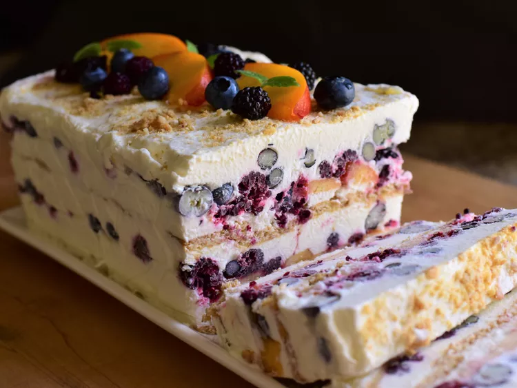

Fruit Icebox Cake Recipes

Ingredients
- 2 1/4 cups cold heavy whipping cream
- 1/4 Confectioner's Cream
- 1 1/2 Teaspoons vannila extract
- 1 pinch salt
- 7 to 8 whole graham crackers(about 1(4.8 ounce) packet), or more as nedded
- 1 large peech-pilled, pitted, and thinly sliced
- 1 cup fresh bluberries
- 1 cup black raspberries or blackberries
Directions
- Line an 8 1/2x4 1/2- inch loaf pan with enough plastic wrap to have overhang on all sides.
- Add heavy cream, powdered sugar, vanilla, and salt to a large mixing bowl. Starting on low speed, begin whipping the mixture. Gradually increase mixer speed to medium-high and beat until cream holds stiff peaks. Taste whipped cream and add more powdered sugar, if needed or desired.
- Spread 3 to 4 tablespoons whipped cream evenly into the lined loaf pan to cover the bottom with a thin layer of cream. Place 3 to 4 graham crackers in an even layer over the cream, breaking them to fit as necessary. Spread about 3/4 cup of cream evenly over the graham cracker layer. Sprinkle half of sliced peach, half of blueberries, and half of black raspberries over cream. Spread another 3/4 cup cream over fruit in an even layer. Add another layer of graham crackers, breaking as necessary to fit. Top with another 3/4 cup cream and spread into an even layer. Top with remaining peach slices, blueberries, and black raspberries. Spread remaining cream over fruit. The loaf pan will be very full at this point. If desired, sprinkle icebox cake with graham cracker crumbs.
- Carefully cover loaf pan with plastic wrap and place cake into the freezer for about 8 hours or overnight.
- When ready to serve, let cake sit at room temperature for 10 to 15 minutes to soften slightly. Carefully lift cake out of the pan using the plastic wrap overhang; peel plastic wrap off. Run a sharp knife under hot water for several seconds, then dry it off with a towel. Cut icebox cake into slices using the hot knife.
Cook's Note!
Clip plastic wrap to the sides of loaf pan with binder clips to help keep it in place.